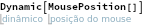
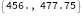
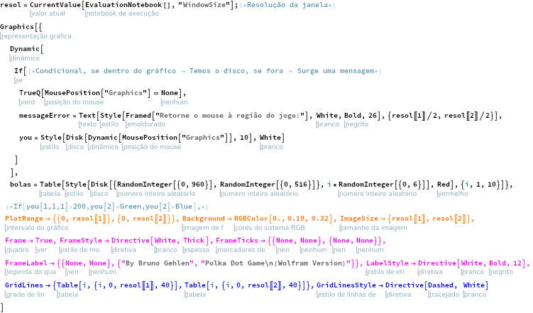
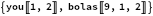
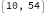

Jogo no Mathematica (Polka Dot)
Usaremos principalmente a função “MousePosition[ ]”, que retorna a posição do mouse (um ponto {x,y}) com relação a um sistema de coordenadas específico, podendo ser um gráfico ou a janela inteira, além da função “Dynamic[ ]”, para manter o programa interativo. Veja um exemplo abaixo:


Agora, definimos uma resolução e elaboramos um “Graphics[ ]” dinâmico (lembre de rodar o código e esconda clickando x2 na barra lateral direita da célula do jogo):


